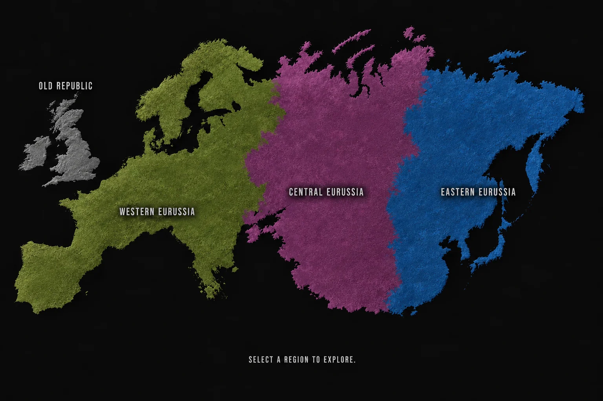
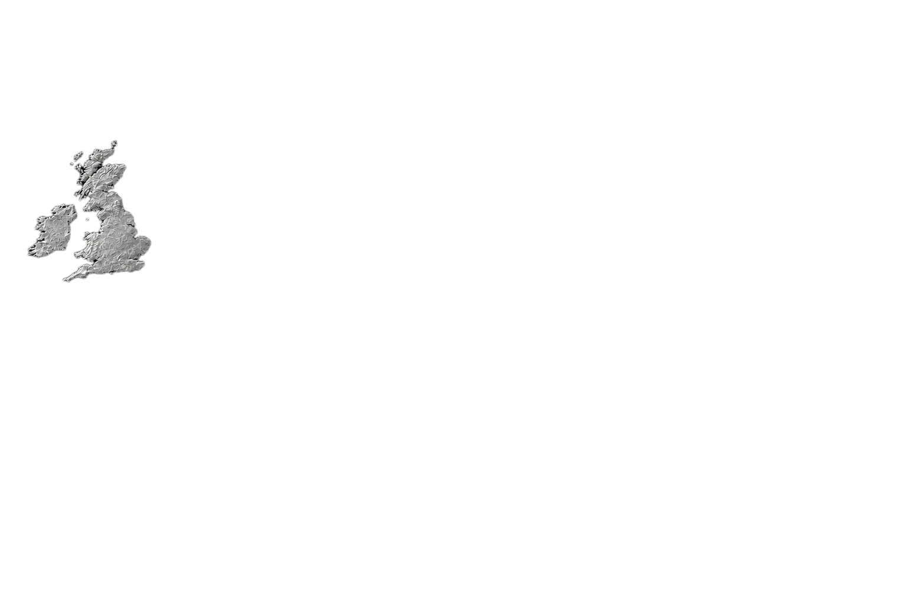
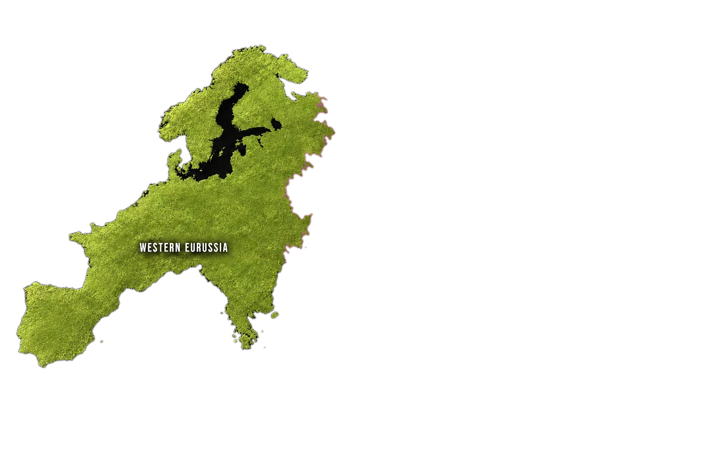
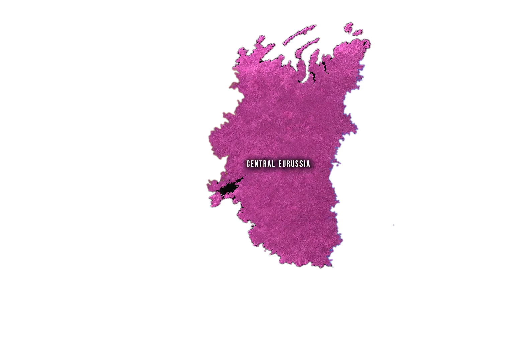
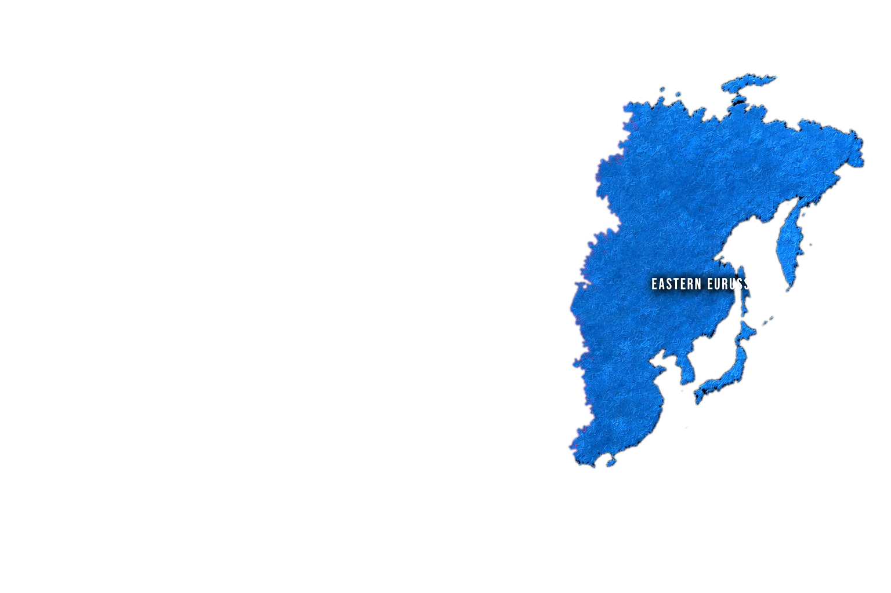
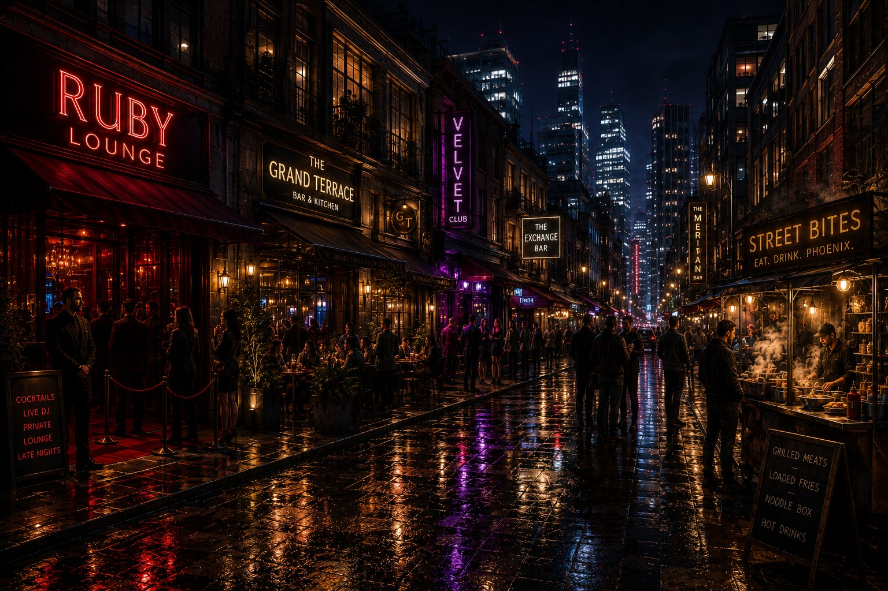
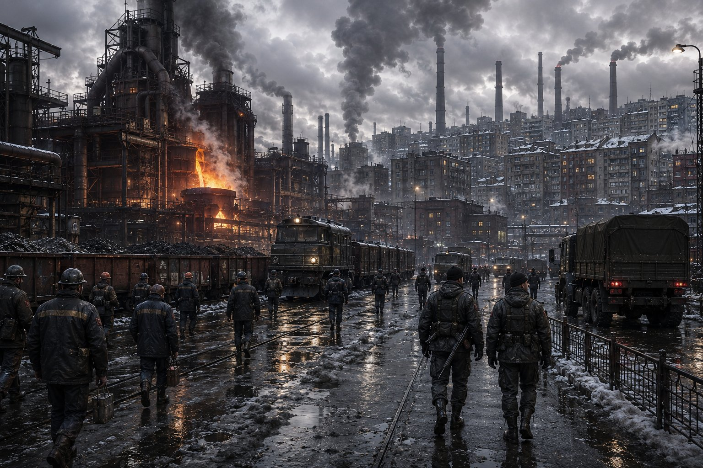
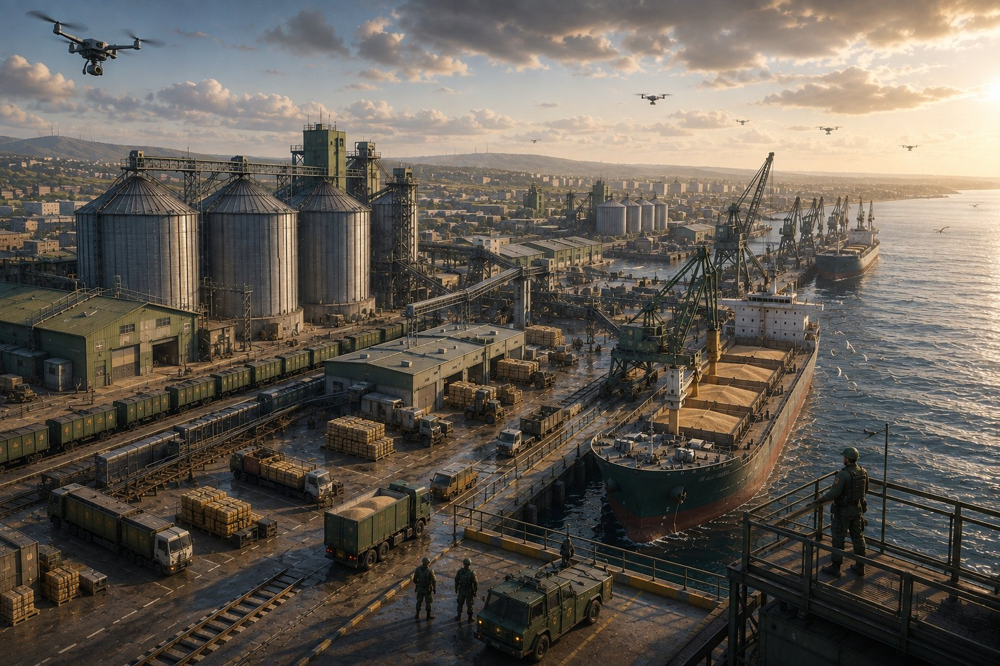
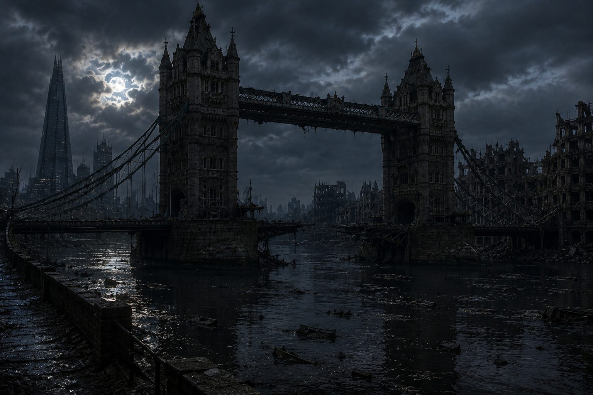
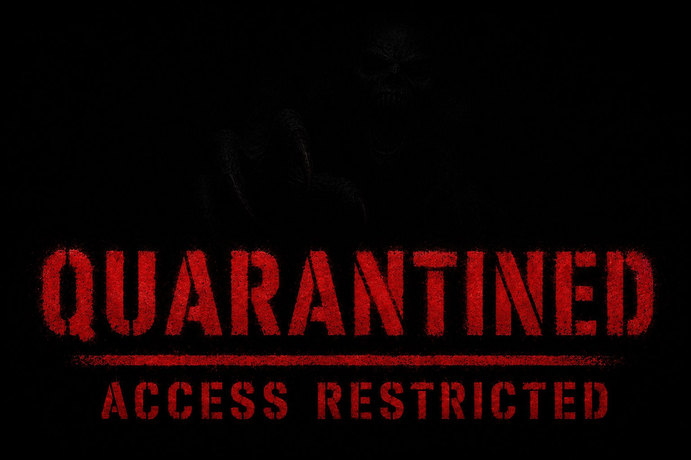

Central Eurussia
Phoenix is the capital of Central Eurussia and the centre of Whitfield government. The vast city is home to many of the region's most important political, military and administrative institutions. It has remained the principal seat of power in Eurussia for generations. It is best known for its scale, its importance to the Whitfield family and its position at the heart of the continent.
Frank Whitfield began Whitfield Palace late in his reign. Every king since has added to it. Perched on a hill above Phoenix, with the city sprawled out below, it is home to the current ruling family. Generations of Whitfields have lived and governed from within its walls, giving it a central place in the political history of Central Eurussia.
Built by Damian Whitfield, the Citadel is a heavily fortified government complex within Phoenix, associated with the Chancellor and Phoenix's ruling council. Security around the site is considerably tighter than around ordinary government buildings, reflecting the importance of the people and operations housed inside it.
Built by Frank Whitfield, Parliament Tower stands within Phoenix as the tallest building in Eurussia, its height a deliberate statement of Parliament's authority. Political representatives from across the continent gather there. Much of the formal business of national government is conducted within its chambers.
High above Phoenix sits Lionel Brady's private penthouse, an expansive residence dominated by black marble, glass and views across the capital. The property reflects Brady's wealth and position within Eurussian politics. It stands in marked contrast to the more traditional surroundings associated with the Whitfield family.
FLAME was founded by Frank Whitfield, whose statue still stands in the Academy's hall. Today FLAME Academy is the principal training institution of Eurussia's elite specialist military organisation. Entry standards are exceptionally high, with applicants expected to demonstrate significant potential before being accepted. The Academy is best known for producing highly trained soldiers and instructors, along with the military traditions developed there across generations.
Created by Damian Whitfield, Cybertech is one of Eurussia's foremost intelligence, surveillance and technological institutions. Its work encompasses intelligence gathering, analytical systems, communications and advanced surveillance technology used throughout the continent. Its expertise has made Cybertech an important part of Eurussia's wider security infrastructure.
Hidden within the mountains of Central Eurussia, Armstech is a highly classified weapons-development complex. Its personnel work on advanced military technology and weapons intended for Eurussia's armed forces, with access to the facility tightly controlled. Its isolation, secrecy and restricted clearance make it one of the least accessible installations in the region.
PMC Headquarters serves as the principal command centre of the Phoenix Military Corps, while Soldiers of the Future, founded by the PMC's commander Wilkes with King Wayne, provides the main recruitment and training route into PMC service. Together, the two facilities form an important part of the military structure supporting Central Eurussia.
Lewton Province occupies a strategically important position on one of the principal approaches to Phoenix. Its city is enclosed by a full wall, with a single road in and a single road out. Its proximity to the capital and strong military presence have made it one of the more heavily defended provinces surrounding the city.
Quarryton is a rugged Central Eurussian town surrounded by numerous working quarries, from which both the settlement and its name originate. Stone extraction forms the backbone of the local economy and provides much of the employment and income on which the town depends. Quarryton is also one of the southernmost substantial settlements before Central Command and the Trench.
Dumbridge is a wealthy Central Eurussian province of quiet estates, removed from the density and activity of Phoenix. Its relatively low profile and unobtrusive surroundings have made it useful for discreet military activity, including the presence of a concealed FLAME safe house.
Shackleton is a remote Central Eurussian province characterised by its isolation from the region's major population centres. A privately controlled storage facility operating under military clearance is located there, giving the otherwise secluded province a degree of military importance.
Clearwater is an open, rain-swept province in Central Eurussia, situated away from the heavily urbanised territory surrounding Phoenix. Its roads provide important connections through this part of the region, while its exposed landscape and persistent wet weather have become defining characteristics of the province.
Wandswind is a border province between Central and Eastern Eurussia, built around one of several gateway towns on the main road connecting the two regions. Most of the town faces that single road, its bars, lodging houses, fuel depots and repair yards serving the traffic passing between them. Its buildings have stood for generations and are still well maintained, though years of passing traffic and harsh weather have dulled their stonework.
Hatchet Hills is an autonomous province within Central Eurussia and one of the continent's more unusual political territories. It answers to no crown and maintains its own internal authority, an independence that has made it a magnet for outlaws and undesirables with nowhere else to go.
The Northern Territories comprise the remote settlements and islands scattered across the far north of Central Eurussia. The north was once a manufacturing powerhouse, until most of its industry was drawn south into Phoenix. Distance, difficult conditions and limited access now separate many of its communities from the more populated areas farther south. They remain an important source of seafood, whale oil and other goods drawn from the northern waters.
Frostbay is a remote port situated on the northern coast, separated from the Central Eurussian mainland by distance and difficult terrain. It serves as one of the principal maritime access points for the surrounding islands, with shipping and supply traffic underscoring the settlement's importance.
Starlight Port is a fortified harbour town in northern Central Eurussia, its natural defences and substantial facilities making it an important maritime location for both civilian and military traffic. It sits along the northern trade route, receiving deliveries carried up from Greenport under the escort of Greenrock's ships.
Dug over thirty years, the Trench is now the vast defensive chasm marking Eurussia's southern frontier, stretching across all three regions — Western, Central and Eastern Eurussia — and separating the continent's heartland from the wilds beyond. It stands as one of the most significant military installations on the continent, manned continuously by forces drawn from across Eurussia.
Built on the dry scrubland of the Dusty Plains south of Quarryton, Central Command is the principal hub of the Trench's Central sector, positioned at the heart of the defensive line. It coordinates operations across the surrounding stretch of the frontier and stands as one of the most vital posts along the entire Trench.
Shaddock sprawls across flat, open land at the gateway between southern Central Eurussia and southern Western Eurussia. It is a city built for motion — assembly lines and freight yards turning out the cars, trains and rolling stock that keep the rest of the continent moving. It is the only Phoenix province governed by a Walker: Bryn Walker holds it for Phoenix, backed by a permanent PMC garrison.

Eastern Eurussia
Krashnov was built by Vladimir Romanov, one of the continent's three founders, in the shadow of a mountain range permanently blanketed in snow. Today it stands as a harsh, fortress-like city, home to a heavy and constant military presence overseen for generations by the Romanov family. Most of the region's actual industry lies beyond the capital itself, spread across the vassal states and provinces that answer to it.
Located within Krashnov, Romanov Estate is the principal residence of the Romanov family. The family has lived and governed from within its walls for as long as the city has stood, giving it a central place in the political history of Eastern Eurussia.
Krashnov Province surrounds the capital. It's here — not in Krashnov itself — that the region's real industrial sprawl lives. Factories, freight lines and the jobs that keep the east running stretch across its territory, tying the province's fortunes directly to the capital it encircles.
Slate Rock began as the mines and ironworks of Dmitri Romanov, its first governor. Today it is an Eastern Eurussian manufacturing settlement set on a plateau. The metals pulled from its ground are melted down and reforged into everything from structural framing to bullets, feeding the industry that runs the rest of the east.
Longwood sits surrounded by green fields and heavy woodland. It was founded to help feed Krashnov, but these days most of what it produces goes straight to the Romanovs and the K-Militia — leaving ordinary citizens waiting on shipments from Greentown instead, a pattern that's become common across many of the east's vassal states.
Suln commands the biggest furnaces and the largest rail system in the east, with freight arriving constantly to feed them. Outside the capital, it's the next most populous province in the region. Unlike much of the east, Suln's people are Romanov loyalists through and through — one of the few provinces genuinely content with the administration.
Cedar Town began as the Orlov family's timber camp, which supplied the wood that built early Krashnov. It is now a lumber settlement, ringed by forests that seem to have no end. Its markets run huge and steady off the timber trade, making it one of the more genuinely profitable towns in the east — profitable enough to warrant a fairly sized K-Militia presence and a fortified stronghold to protect it.
Shades Reach is rebel country. Its people have never made peace with Romanov rule. Constant skirmishes with the K-Militia are a fact of life here. When dissent grows too far, the province has been razed outright — a warning the Romanovs have used more than once.
Rooks Point is the easternmost city in Eurussia, reachable only by mountain tunnels cut through the range that isolates it. Its proximity to the eastern sea has made it a fishing town at heart. Its harbour also serves as a terminal for Greentown's ships and navy.
Eastern Command is one of two hubs covering the Trench's eastern stretch. Run by Mary, it is the most isolated command post on the frontier — miles from anything, with nothing but open ground between it and the nearest settlement.
Pacific Command sits buried in jungle, the least conventional of the Trench's hubs and all the harder to approach for it. Run by Thomaz, it doubles as a watch post for Greentown's navy — the last set of eyes on anything trying to slip in off the water before it reaches the coast.

Western Eurussia
Greentown began as the farms Thomas Walker set out to feed the new continent with. Today it is the capital of Western Eurussia and home to the powerful Walker family. For generations, Greentown has served as Eurussia's breadbasket. Over the years, unrest has spread across Western Eurussia's vast lands. That unrest made clear the region's need for a force of its own — one it could raise, train and rely on without waiting on Phoenix.
Walker Estate sits within Greentown and is the principal residence of the Walker family. Generations of Walkers have lived and governed from within its walls, giving it a central place in the political history of Western Eurussia.
Ember West is Greentown's dedicated cadet training institution, established by Luke Walker in the aftermath of the city's unrest to provide Western Eurussia with its own permanent security and training infrastructure. Its most capable cadets are known to go on to further opportunities beyond the institution itself.
Western Command is one of two hubs covering the Trench's western stretch, holding one of the frontier's most exposed sections. Run by Mario, it coordinates the defence of the region alongside its neighbouring Atlantic post.
Atlantic Command watches over the westernmost waters along the Trench, run by Sammy. It forms part of the wider Western defensive network, its coastal position giving it a distinct operational character from the rest of the frontier hubs. It also holds a docking yard for Greentown's patrol boats.
Founded as a fishing town in Greentown's golden age, Greenport is now Western Eurussia's principal food port, the main point through which the region's grain and produce reach the rest of the continent by sea. Most of the harvest from Greentown's farmland passes through its docks, making it as vital to Eurussia's food supply as Greentown itself — a chokepoint the whole continent depends on, whether it knows it or not.
Greenrock began as a fishing town. It is now the continent's main naval fortress, home to the Greentown navy. From here, its ships escort vessels from Greenport to Krashnov along the northern passage. They also patrol the sea around the Trench, with two vessels stationed near Pacific Command — a strategic position matched by nowhere else on the continent.
Created by Sebastian Walker as Greentown's land and trade grew, the Ministry of Agriculture is the central office where the protection and distribution of Western Eurussia's resources are decided. Every harvest that leaves the region's farmland passes through decisions made here before it reaches the rest of the continent.
Kilrock grew up among the farms Thomas Walker spread across the west, one of the first townships of Greentown's golden age. By the end of his rule it had become a province, with his son Isaac as its first governor. Kilrock has kept to Thomas's ways ever since. It is still farming country. Its harvests now supply Central Command on the Trench.
Marsh Valley began as one of the farming towns of Greentown's golden age and grew into the west's main storage hub. When the Crimson Pact rose, the supply convoys that fed the war ran through it. It grew into a province on the back of that trade, with Gideon Walker as its first governor. During the Midwest Uprising it opened its roads to the forces sent to retake neighbouring Shaddock, taking in Shaddock's refugees. Its governor today is Rhys Walker.

